Vamos a construir un molino de viento estable en esta actividad.
Actualmente, los molinos eólicos son una gran fuente de enrgía limpia y fundamental a la hora de cuidar
nuestro planeta.
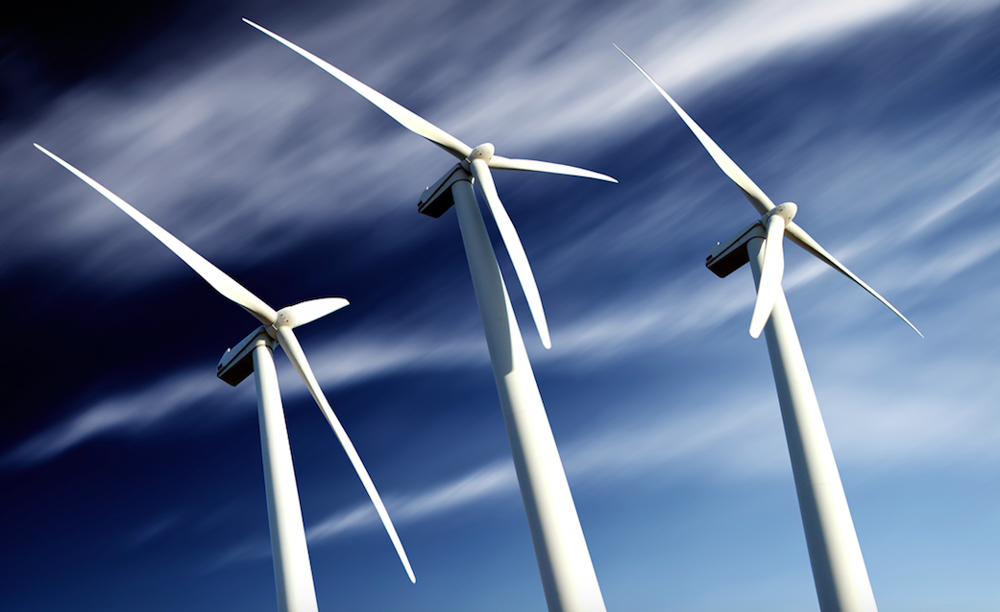
En este caso construiremos un molino de viento pero que va a funcionar de una manera distinta. En nuestro
caso, un motor será el que mueva las hélices.
Le colocaremos un motor en la base y tendremos que trasladar ese movimiento a la parte de las aspas del molino.
A continuación os mostramos un montaje de ejemplo de esta actividad.
Empezamos construyendo la base.
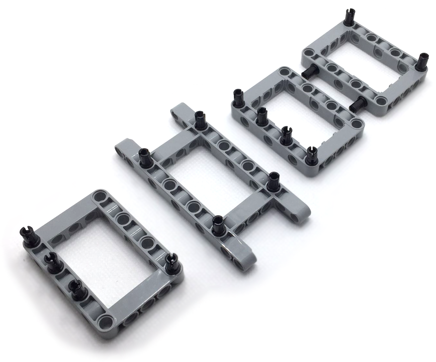
Sujetamos la base con las vigas blancas más largas.
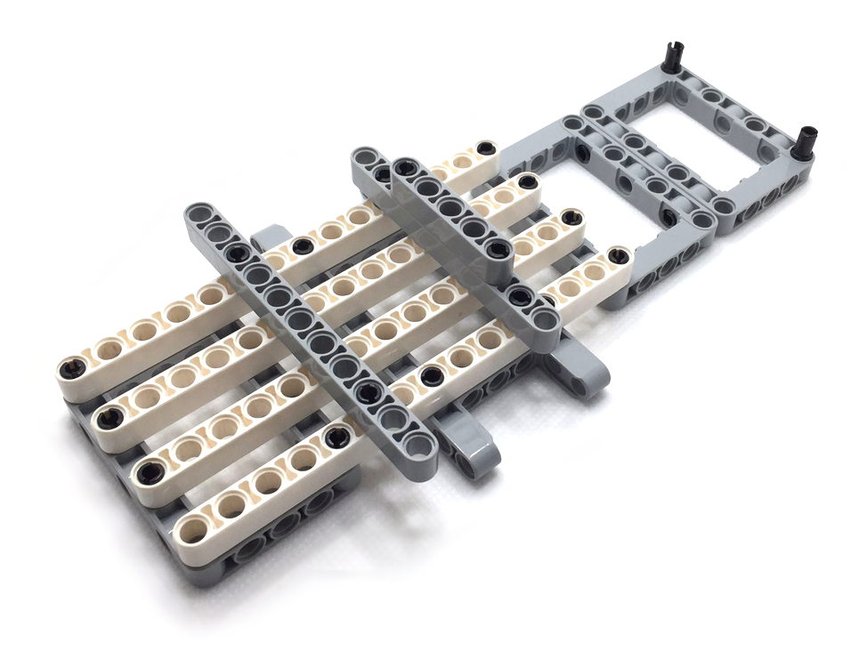
Añadimos el soporte del motor y la sujección del mástil del molino.
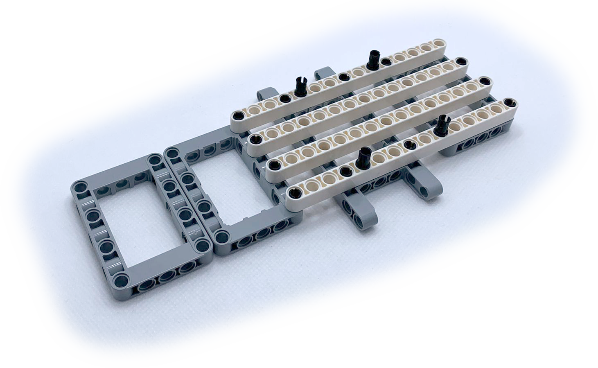
Le añadimos al motor el eje y el engranaje que va a mover.
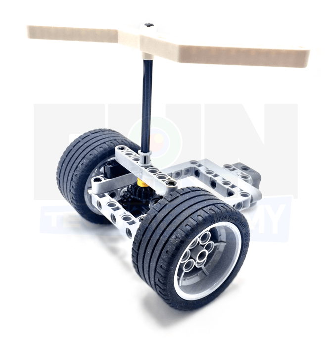
Añadimos el motor a nuestra base.
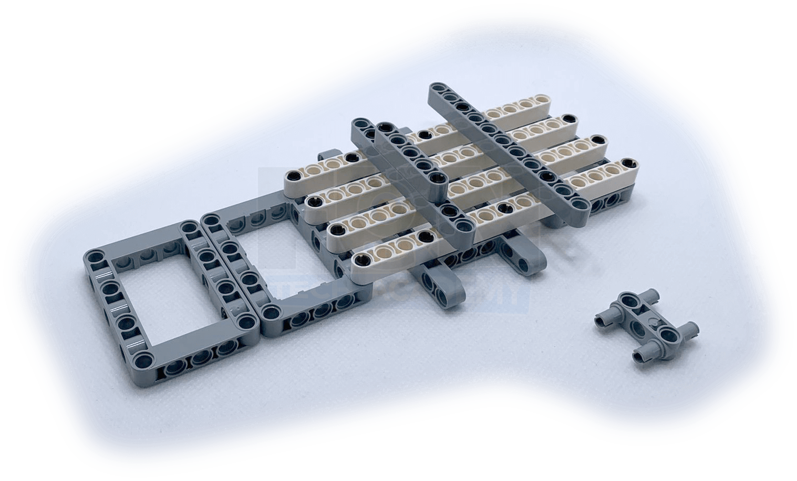
Montamos la base del mástil con dos sujecciones laterales.
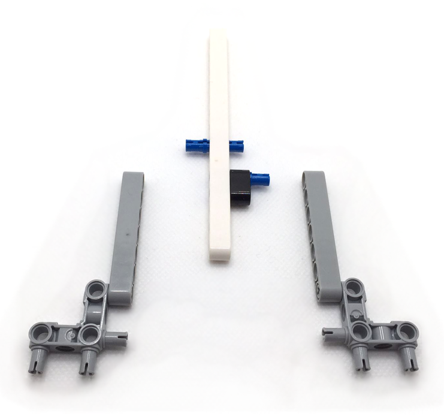
Le añadimos la base del mástil a la base construida.
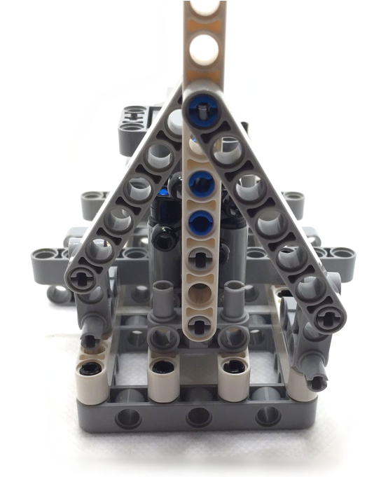
Construimos la hélice.
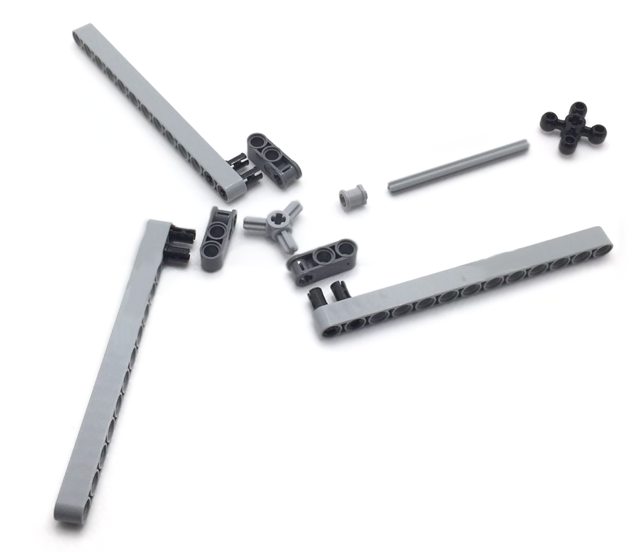
Le añadimos la parte alta del mástil a la hélice.
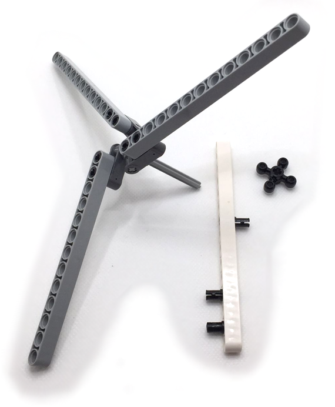
Construimos la transmisión que hará que el movimiento del motor lo traslademos a la hélice del molino.
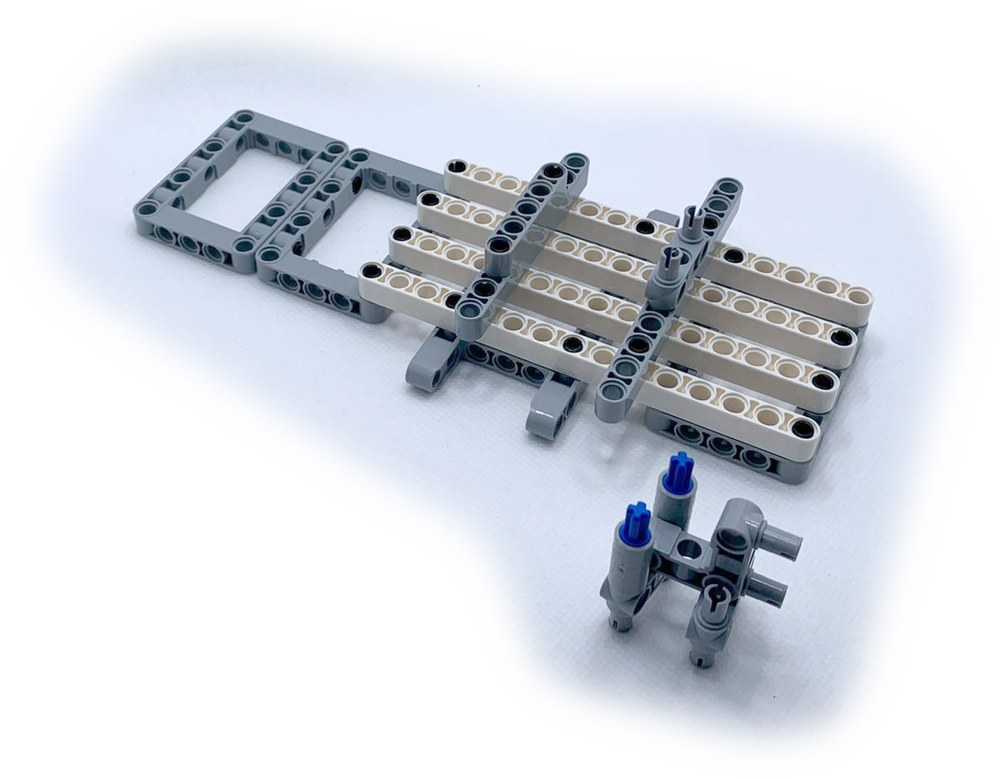
Añadimos la parte superior del mástil y la transmisión al montaje.
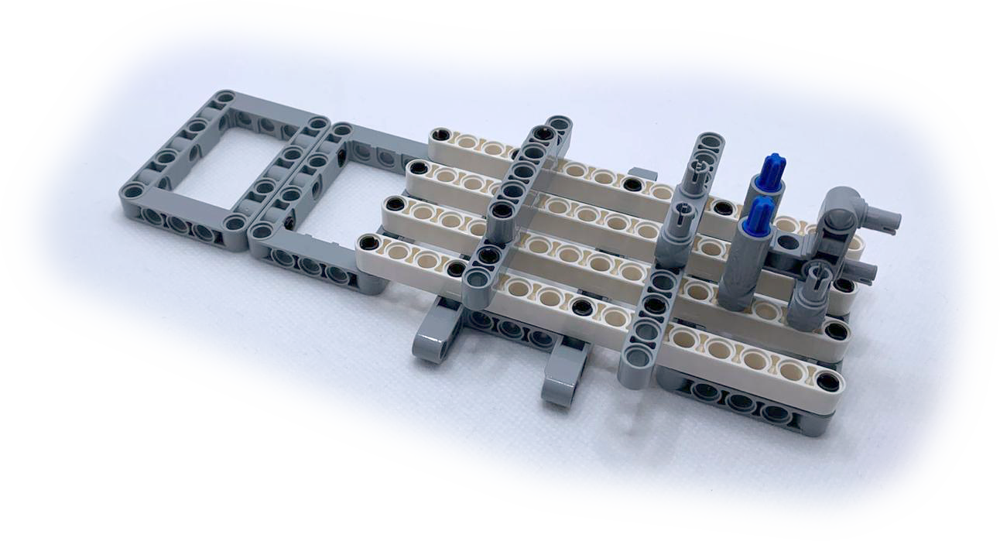
Finalmente sujetamos el bloque EV3 a la base y conectamos un cable al motor y a una de las salidas identificadas con una letra.
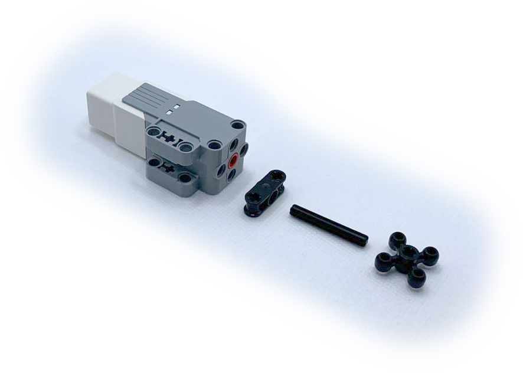
Y ya podemos poner en marcha nuestro molino.